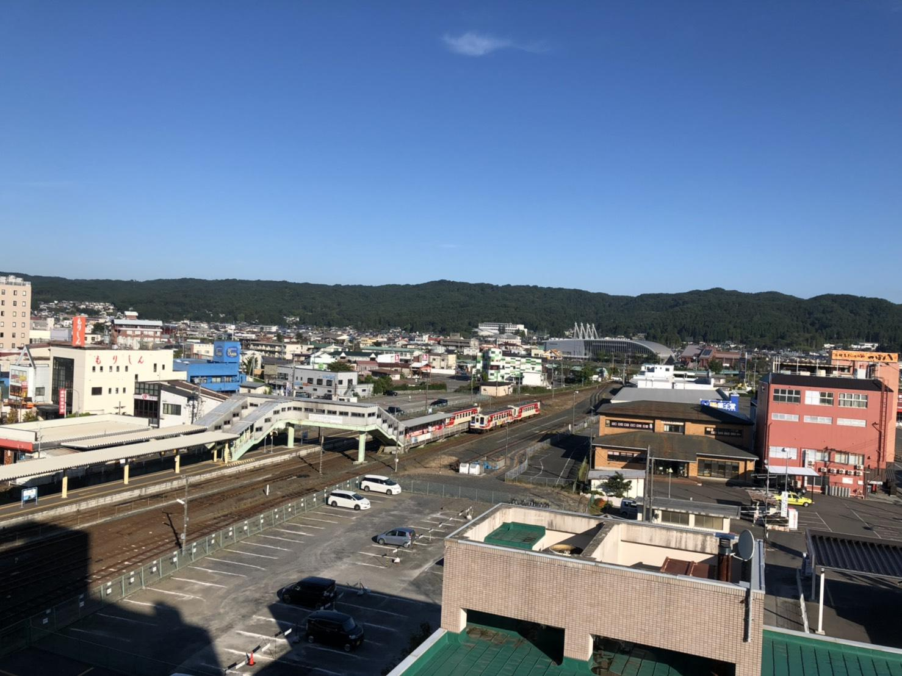

盛岡情報ビジネス＆デザイン専門学校の叶 快真(かのう けんしん)です。出身は岩手県沿岸の地域、久慈市です。特技は剣道で、小学生1年生から10年間続けていました。地区大会ではありますが、中総体で個人戦、団体戦で優勝したこともあります。 好きな言葉は、機動戦士ガンダムUCより「過ちを気に病むことはない。ただ認めて次の糧にすればいい。それが大人の特権だ」です。やる気を出せばスピード3倍！よろしくお願いします。

盛岡情報ビジネス＆デザイン専門学校の叶 快真(かのう けんしん)です。出身は岩手県沿岸の地域、久慈市です。特技は剣道で、小学生1年生から10年間続けていました。地区大会ではありますが、中総体で個人戦、団体戦で優勝したこともあります。 好きな言葉は、機動戦士ガンダムUCより「過ちを気に病むことはない。ただ認めて次の糧にすればいい。それが大人の特権だ」です。やる気を出せばスピード3倍！よろしくお願いします。
私の趣味はプラモデル作りとソフビ人形のリペイントです。ガンプラや仮面ライダー、ウルトラ怪獣、ゴジラ怪獣が特に好きです。 こだわっているところはリアリティで、汚れ、傷、破損を敢えて取り入れるなどです。新品のようにきれいなものもいいですが、私は味のある古臭い表現の方が好きで、こういったものを作るとき意識します。